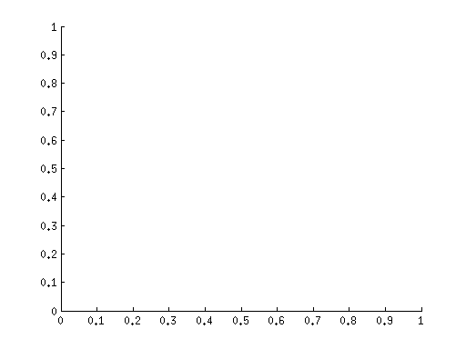

Contents
function templateMatchingModifiedImg()
clc;
clear all;
close all;
imgOrg = imresize(imread('vegan-modified.jpg'),0.5);
template = imresize(imread('soy-dessert.jpg'), 0.5);
figure;
imhist(template);
title('Histogram template');
figure;
imhist(imgOrg);
title('histogram image');
template = double(template);
windowSize = size(template);
img = imgOrg;
img = padarray(imgOrg, floor(windowSize/2), 'replicate');
dim = size(imgOrg);
loc = [];
resMin = 10^9;
result = ones(size(imgOrg))*255;
for i = 1:dim(1)
for j = 1:dim(2)
mid = double(img(i+ floor(windowSize(1)/2),j+floor(windowSize(2)/2)));
I = double(img(i:i + windowSize(1) -1 , j: j + windowSize(2) - 1));
temp = (I - template);
result(i,j) = sum(abs(temp(:)));
if result(i,j) < resMin
resMin = result(i,j);
loc = [i j];
end
end
end
disp(['The location of min intensity is at location ' num2str(loc(1)) ', ' num2str(loc(2))]);
figure;
drawnow;
hold on;
figure;
imshow(imgOrg);
rectangle('Position', [loc(2) - windowSize(2)/2, loc(1) - windowSize(1)/2, windowSize(2), windowSize(1)], 'EdgeColor', 'r', 'LineWidth', 2);
title(['Image with Bounding Box around the patch with the min sum of absolute difference loc ' num2str(loc(1)) ', ' num2str(loc(2))]);
figure;
imshow(mat2gray(result));
rectangle('Position', [loc(2) - windowSize(2)/2, loc(1) - windowSize(1)/2, windowSize(2), windowSize(1)], 'EdgeColor', 'r', 'LineWidth', 2);
title(['Sum of absolute difference Image with bounding box at ' num2str(loc(1)) ', ' num2str(loc(2))]);
end
The location of min intensity is at location 382, 1

The procedure does not work as most of the image pixel instensties are very high in the image as compared to the template as seen from the histogram of the images. The intensities are not normalized in either of the images
and thus the sum of absolute difference fails to return the min value at the correct point. Instead the best position returned is an arbitrary value.